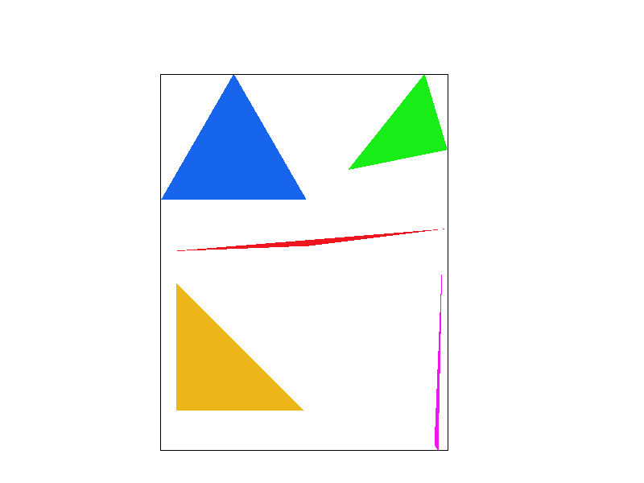
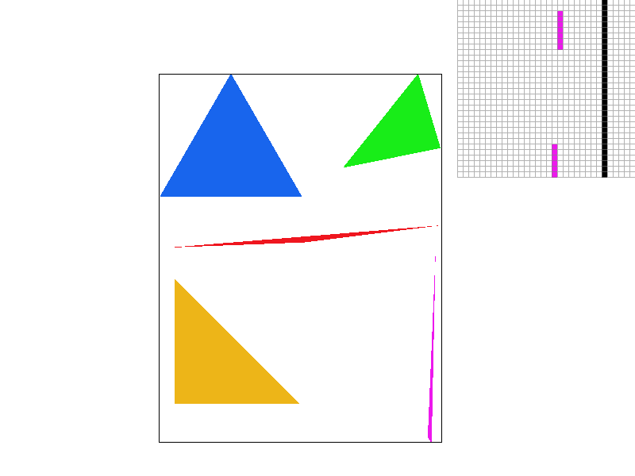
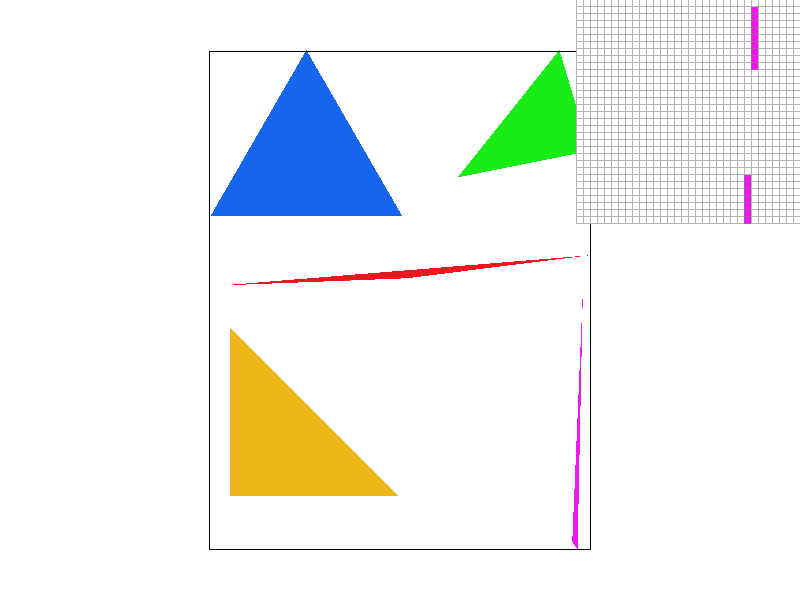
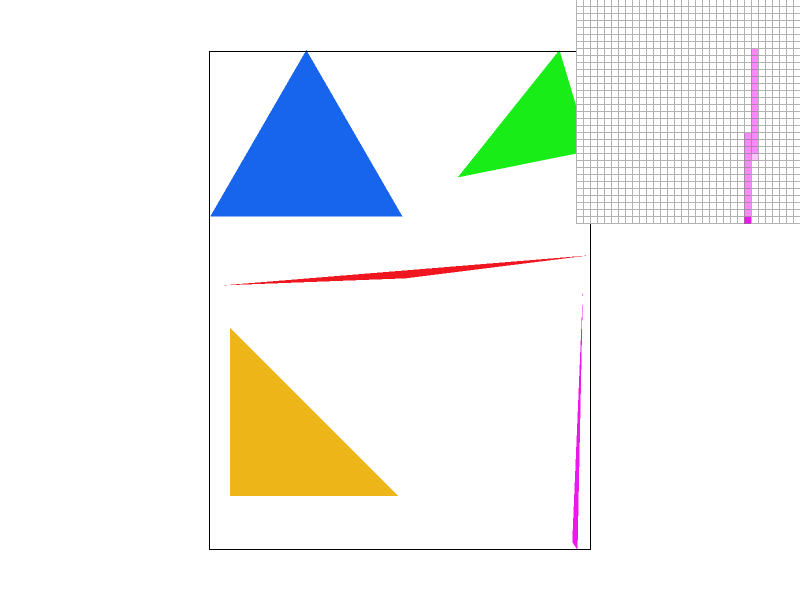
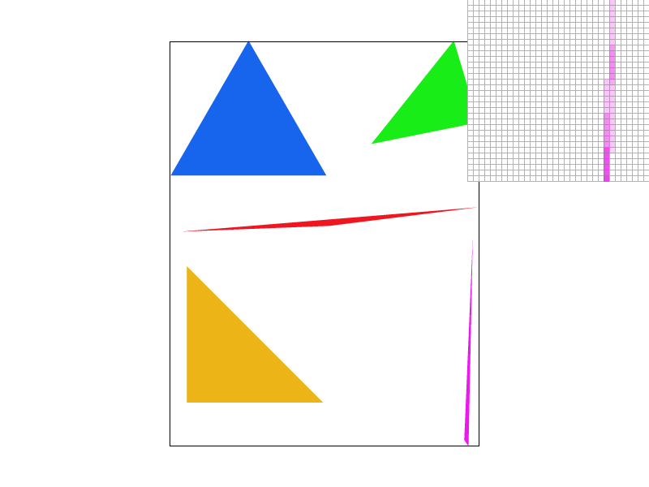
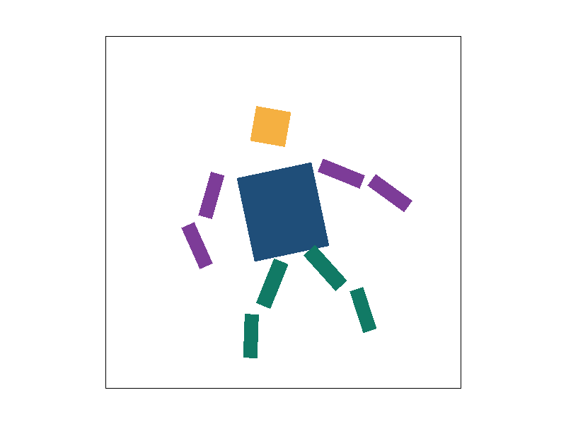
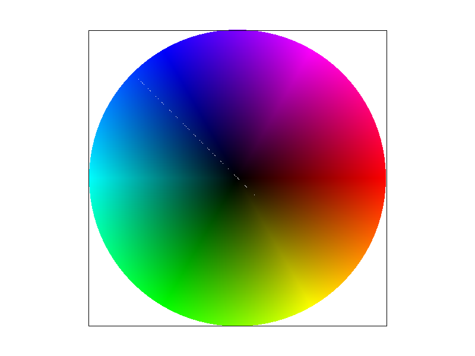
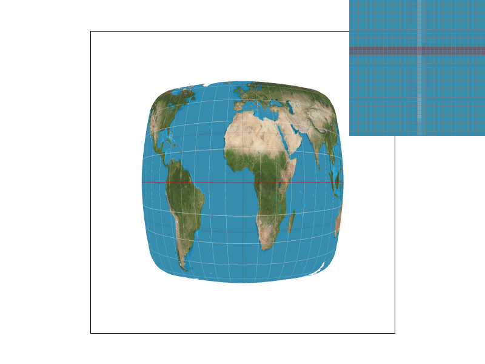
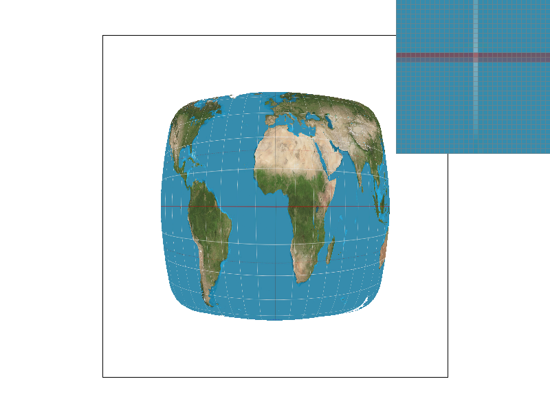
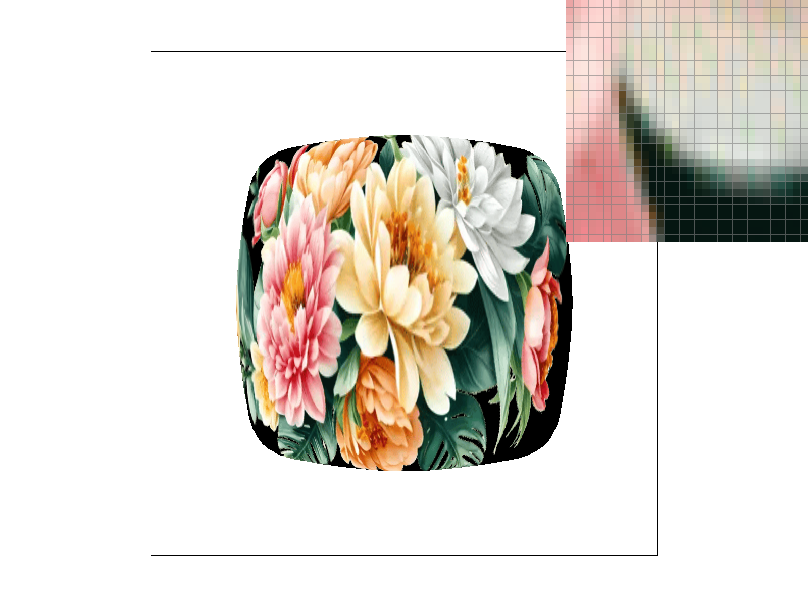

CS184/284A Spring 2025 Homework 1 Write-Up
Names: Kushagra Srivastava
Link to webpage: https://cal-cs184-student.github.io/hw-webpages-kushagras481/
Link to GitHub repository: https://github.com/cal-cs184-student/hw-webpages-kushagras481

Overview
Give a high-level overview of what you implemented in this homework. Think about what you've built as a whole. Share your thoughts on what interesting things you've learned from completing the homework.Task 1: Drawing Single-Color Triangles
I rasterized each triangle by first finding the smallest axis-aligned bounding box that contains the three vertices, clamping that box to valid screen coordinates, then exiting if the box is empty or the triangle is degenerate. Then, for each pixel center(x + 0.5, y + 0.5) inside that box, I evaluated using
the 3-line test and fill the pixel if the three edge values share
the same sign, including boundary points. This is no worse than a
method checking each sample in the triangle's bounding box because
it uses the same candidate set and does constant-work time per
sample. So runtime wise, it is
O(#samples in bounding box).
|
 basic/test4.svg with default
viewing parameters.
|
 basic/test4.svg with pixel
inspector centered on an interesting part of the
scene.
|
Task 2: Antialiasing by Supersampling
I implemented supersampling by storing multiple color samples per pixel insample_buffer (so the buffer has
width * height * sample_rate entries) and thinking of
each pixel as a small
sqrt(sample_rate) x sqrt(sample_rate) grid of
subpixels. When rasterizing a triangle, I still loop over its
pixel-space bounding box, but instead of testing only the pixel
center, I test every subpixel center with the same 3-edge inside
test and color only the subsamples that fall inside the triangle.
This matters because aliasing happens when a sharp edge is
represented by just one sample per pixel; with supersampling, edge
pixels can be partially covered, and averaging those subsamples
gives smoother boundaries. I also updated the pipeline so it
actually supports this: fill_pixel now writes to all
subsamples of a pixel (so points/lines still show up correctly),
set_sample_rate and set_framebuffer_target
resize the sample buffer when resolution or sampling changes, and
resolve_to_framebuffer averages each pixel’s subsamples
into the final 8-bit framebuffer color. Comparing sample rates 1, 4,
and 16 on basic/test4.svg, the biggest difference
appears along thin, slanted triangle corners: rate 1 shows clear
stair-step aliasing, while 4 and especially 16 produce much smoother
edges. In the pixel inspector, this happens because higher
supersampling captures partial triangle coverage within a pixel, so
edge pixels get averaged intermediate colors instead of flipping
directly between fully inside and fully outside.
|
 basic/test4.svg at sample rate 1.
|
 basic/test4.svg at sample rate 4.
|
 basic/test4.svg at sample rate 16.
|
Task 3: Transforms
I was trying to make Cubeman feel alive instead of stiff. The idea was to capture that split-second in motion where someone is leaning forward, mid-step, with their limbs all in different positions and a bit off-balance in a good way. I did that because the original figure felt more like a mannequin, and I wanted this version to have personality and energy at a glance, even though it’s made from simple geometric shapes.|
 |
Task 4: Barycentric coordinates
Barycentric coordinates are a way of describing any point inside a triangle as a weighted blend of its three vertices. Specifically, for a triangle with vertices A, B, and C, any interior point P can be written asP = αA + βB + γC, where the weights
α, β, γ sum to 1 and each weight is proportional to how
close P is to that vertex–α is largest near A and shrinks as P moves
away. This makes them perfect for color interpolation: to shade a
point inside a triangle, we just compute its weights and blend the
vertex colors as C = αC_A + βC_B + γC_C. The image
above demonstrates this beautifully. The red, green, and blue
corners each dominate their neighborhood, and the interior smoothly
mixes all three as the weights balance out, with the center
appearing as a neutral gray where all three contribute equally.
|
 |
Task 5: "Pixel sampling" for texture mapping
Pixel sampling is the process of figuring out what color a pixel should display by looking up a corresponding point on a texture using continuous (u, v) coordinates, which are calculated by interpolating UV values across a triangle using barycentric coordinates. From there, either nearest or bilinear sampling is used to determine the final color. Nearest sampling simply aligns to the closest texel, which is fast but can look blocky and jagged, especially along edges. Bilinear sampling instead blends the four surrounding texels using weighted interpolation, producing much smoother results. Looking at the four screenshots, this difference is visible in the pixel inspector, where the boundary between the teal ocean and the dark band representing the equator shows clear jagged blocks with nearest sampling at 1 sample per pixel, while bilinear at 1 sample per pixel already smooths that edge out noticeably. Increasing to 16 samples per pixel helps nearest sampling close the gap, since averaging multiple samples mimics a blur, but bilinear at 16 samples per pixel still comes out the cleanest. The two methods differ most when a texture is being magnified or sampled at an angle, because that is when a small move in screen space causes a large jump in texture space and nearest sampling struggles with this discontinuity while bilinear handles it more smoothly.|
|
 |
|
 |
|
log2 of the
largest footprint to figure out which mip level to sample from.
L_NEAREST just rounds to the closest level, while
L_LINEAR blends between two levels for a smoother
result. As for the tradeoffs between all three techniques,
supersampling gives the best antialiasing since it catches
everything from geometry edges to texture detail, but it's the most
expensive and memory usage scales directly with sample count.
P_LINEAR bilinear pixel sampling is much cheaper with
barely any memory cost, though it only smooths things out within a
single mip level. Level sampling lands somewhere in between, needing
around 33% more memory for the mipmap but doing a solid
job reducing minification aliasing without tanking performance, and
trilinear filtering only adds a small extra cost on top to get rid
of those harsh transitions between mip levels.
|
|
|
|
 |
|